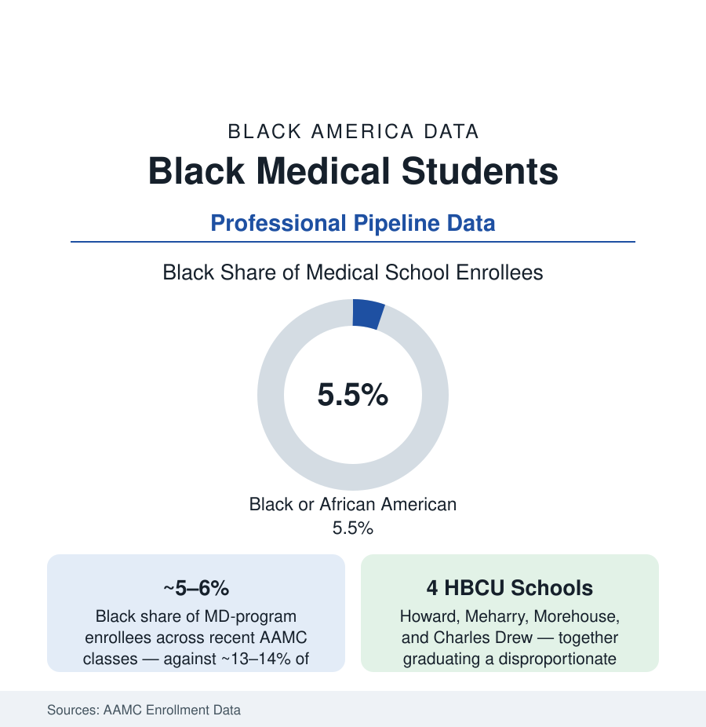

Black Education
Black Medical Students: The Longest Pipeline in American Education
Black students are about 5–6% of U.S. medical school enrollees — a share that has barely moved in four decades. The AAMC pipeline data, stage by stage.

No pipeline in American education is longer or more selective than medicine's — and at its narrowest point, the medical school classroom, Black students hold about five to six percent of seats in the AAMC's annual counts, a share that the association's own historical series shows barely improving across four decades and dipping for Black men in absolute terms across long stretches. The workforce article in the health section counts the physicians this pipeline produces; this article walks the pipeline itself: the pre-med attrition, the application economics, the admissions ledger, and the residencies where the specialty map gets drawn.
The Funnel: From Freshman Intent to the MCAT
The attrition begins in the first college semester: the entering-freshman surveys record Black students declaring pre-med intent at rates comparable to peers — and the gateway-course sequence (general and organic chemistry, physics, biology) sheds them at the documented 'weed-out' rates the education research has measured for fifty years, with the advising file's gaps (the counselor article's collegiate version: pre-health advising access, research-placement access, the shadowing networks that run on family connection) compounding course by course. The survivors reach an application process whose costs the AAMC fee data itemize: the MCAT and its preparation market (commercial courses priced in the thousands against free resources of uneven reach), the application services' per-school fees, the interview travel of the pre-virtual era — a cumulative cash toll the low-income applicant data show functioning as a filter before any committee votes. The association's fee-assistance program and the current era's test-optional experiments are the system's counterweights, each with measured, modest effects in the enrollment series.
The Admissions Ledger and the HBCU Medical Schools
The enrolled share — five to six percent — is produced by an applicant pool in which Black candidates apply at roughly seven to eight percent and matriculate at rates the AAMC's grid (GPA by MCAT band) partially explains and partially leaves to the holistic-review file. Four institutions carry an outsized share of the production: the HBCU medical schools — Howard, Meharry, Morehouse School of Medicine, and Charles R. Drew — whose classes run majority-Black by design and whose graduates' practice-location data (the underserved-practice rates the workforce literature documents) anchor the mission file; alongside them, the majority institutions whose Black enrollment clusters in a minority of schools in the AAMC's distribution — the median school enrolling Black students in the low single digits of its class. The legal file frames the whole ledger: the affirmative-action era's rise and plateau in the series, and the post-2023 admissions environment (the Supreme Court's decision ending race-conscious admissions), whose first-cycle data the AAMC reported as a measurable drop in Black matriculants — a change this article records as the current series' open question, its multi-year effect not yet in the data.
Residency: Where the Specialty Map Is Drawn
Graduation is the pipeline's midpoint: the Match allocates residencies whose specialty distribution the ACGME data map — Black residents concentrated in primary care, pediatrics, obstetrics-gynecology, and psychiatry at above-average shares, and thinnest in the competitive surgical subspecialties (orthopedics, plastic surgery, dermatology, ophthalmology) whose program-level diversity audits are now published literature. The drivers the research names are structural: the away-rotation and research-year economics, the mentorship scarcity loop (few Black faculty in a specialty means few sponsors into it — the faculty data in the workforce article close the circle), and the Step-score screening era's documented effects, now being re-measured as licensing exams move to pass-fail. Fellowship and faculty conversion continue the thinning: each stage's Black share is a fraction of the stage before, a geometry the pipeline metaphor understates — it is less a pipe than a staircase of sieves, and the sieves' mesh sizes are the policy variables.
What Moves the Numbers in the Record
The interventions with measured effects in the literature share a shape: early and sustained (the pipeline programs that begin in high school and hold students through the gateway courses — the SNMA's and the universities' pathway programs with their tracked cohorts), financial (debt-relief and scholarship structures aimed at the application and attendance toll — the debt data showing Black graduates carrying the system's highest balances), and institutional (the HBCU schools' expansion, the new medical schools with mission-built classes — including the HBCU-affiliated and community-anchored schools chartered in the current decade). The National Medical Association's workforce advocacy and the AAMC's own center for health justice publish the scoreboard annually. The trend the scoreboard shows — a generation of effort holding a share roughly still — is the data's verdict on intensity, not on direction: the interventions work at the scale they are funded, and the scale has never matched the stated goal.
Reading the Pipeline Data
Five percent of the classroom becomes five percent of the profession becomes the concordance data of the health section — the outcomes that follow when patients and physicians match, and the ones that follow when they cannot find each other. The pipeline is where health equity is manufactured or rationed, a decade before it reaches a bedside. Its numbers are education data. Its consequences are measured in the mortality tables.
More in Black Education
Black Educational Attainment: High School Parity, the College Gap
About 89 percent of Black adults hold a high school diploma and one in four holds a bachelor's degree or higher — the attainment ladder, the college completion gap, and the generational trend.
Historically Black Colleges and Universities: Enrollment and Degrees
More than 100 HBCUs enroll roughly 290,000 students and award about one in six Black bachelor's degrees — an outsized share from a small sector. The federal education data.
Black College Enrollment: 2.4 Million Students
About 2.4 million Black students are enrolled in American colleges — nearly two-thirds of them women. The NCES enrollment data by sector, level, and trend.
Source: Association of American Medical Colleges enrollment, applicant, and faculty data; Accreditation Council for Graduate Medical Education; National Medical Association; Liaison Committee on Medical Education.